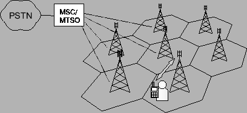

Siguiente: Caracterización de las radiobases
Subir: Conceptos preliminares
Anterior: Conceptos preliminares
Índice General
El diseño de red para las comunicaciones móviles está basado en el
concepto celular, concepto introducido por Bell Laboratories
en la década de 1970. El sistema celular divide la región en celdas,
cubiertas cada una por un sistema de radio (radiobase) que hace
posible la conexión de los terminales móviles a la red, y un sistema
de conmutación (central móvil celular, MSC/MTSO) que permite la
interconexión entre las estaciones base y la conexión a la red
conmutada de telefonía pública (PSTN). En la figura 2.1 se
puede ver un esquema típico de una red celular, las celdas suelen
representarse como un área hexagonal a fin de facilitar el análisis.
Figura 2.1:
Esquema de una red celular
|

|
Los principales elementos que diferencian al sistema celular de
otros sistemas radio usados anteriormente son el uso de varias
radiobases con relativa poca cobertura, y la capacidad de reutilizar
en distintas zonas geográficas separadas una determinada distancia
las frecuencias que fueran asignadas para los canales de
comunicación del sistema. Esto se traduce en:
- Aumento en la capacidad del sistema
- Reducción en el uso de potencia
- Mejor cobertura
La reutilización de frecuencias permite un uso más eficiente del
espectro radioeléctrico, que es un recurso escaso y caro. A la hora
de planificar el sistema es necesario estimar el área que habrán de
cubrir las radiobases, así como también los canales que se le debe
asignar a cada una de ellas, generando así los llamados
patrones de reutilización de las celdas. Esto debe hacerse
minimizando los efectos de interferencia co-canal (señales
interferentes con la misma portadora que la señal útil), para
cumplir con determinados requerimientos de calidad de señal, más
específicamente con un nivel mínimo de relación portadora/señal
interferente (C/I o CIR).
Como se dijo anteriormente, el elemento responsable de la
transmisión de la señal en la comunicación bidireccional con el
terminal es la radiobase (RBS o ERB). Se denomina área de
cobertura de una radiobase al área geográfica en la cual un
terminal móvil puede establecer una comunicación usando esa
radiobase como interfase con la red. Depende de la señal emitida por
la propia radiobase, y tiene una fuerte dependencia de la geografía
y edificación de la zona. La cobertura continua se logra mediante el
mecanismo de handover, esto es, el proceso de pasar una
comunicación de un canal en una celda a un nuevo canal en otra celda
o en la misma sin que se corte la comunicación. El manejo de estas
transiciones es un factor vital en un sistema celular, si bien le
agrega cierta complejidad.
Según la capacidad y cobertura requeridas en el área de influencia
de las redes, su diseño implicará la utilización de celdas de
diferentes radios y las antenas de las radiobases presentarán
diferentes alturas y potencias de transmisión. De allí surge la
clasificación de las celdas en tres tipos:
- Macroceldas. Son los tipos de celdas más comunes
para operación celular, proveen un área de cobertura de radio entre
1 km y 30 km. Las antenas se montan sobre el nivel medio de las
edificaciones y tienen una potencia de salida que ronda en el
entorno de las decenas de Watts. Se utilizan en ambientes
outdoor (exteriores).
- Microceldas. Tienen un radio de cobertura que está entre 100 m y
1000 m. Incrementan la capacidad de la red, ya que permiten hacer un
mayor manejo de tráfico y hacen posible la utilización de potencias
de transmisión muy bajas (unos pocos Watts). A diferencias de las
macroceldas, las antenas se montan debajo del nivel medio de
edificaciones. Al igual que éstas se utilizan en ambientes
outdoor.
- Picoceldas. Proveen una cobertura aún más localizada que
las microceldas, con un radio de cobertura típico menor a 100 m. Se
utilizan generalmente para brindar cobertura en ambientes indoor
(cerrados) identificados como de muy alto tráfico, tales como centros
comerciales y aeropuertos, donde existe una alta densidad de usuarios con
un patrón de comportamiento de baja movilidad.
Siguiente: Caracterización de las radiobases
Subir: Conceptos preliminares
Anterior: Conceptos preliminares
Índice General
SAPO